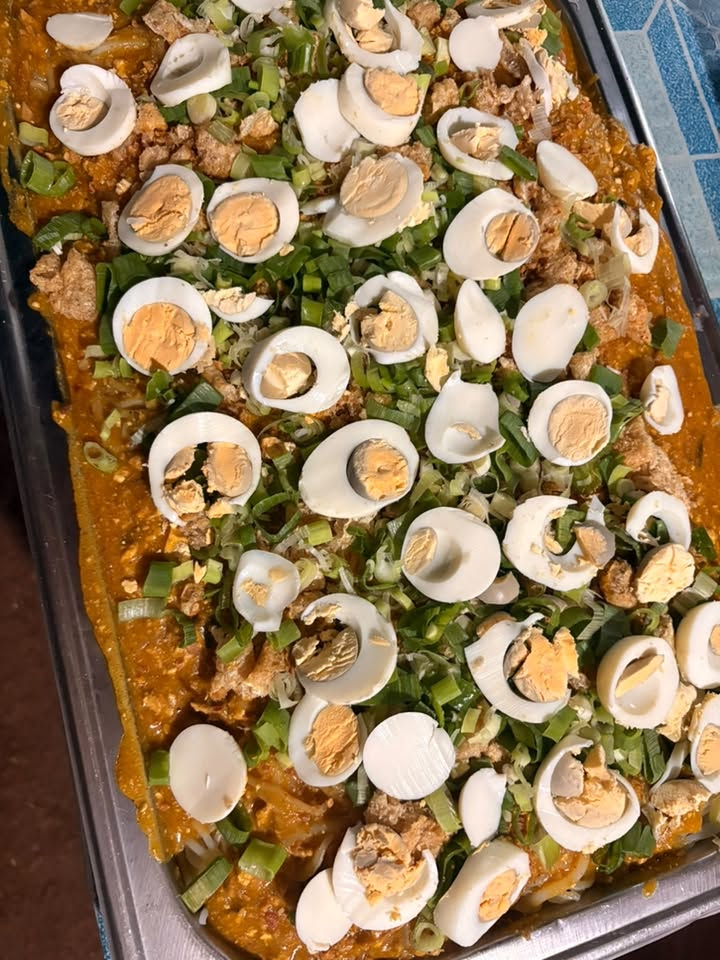
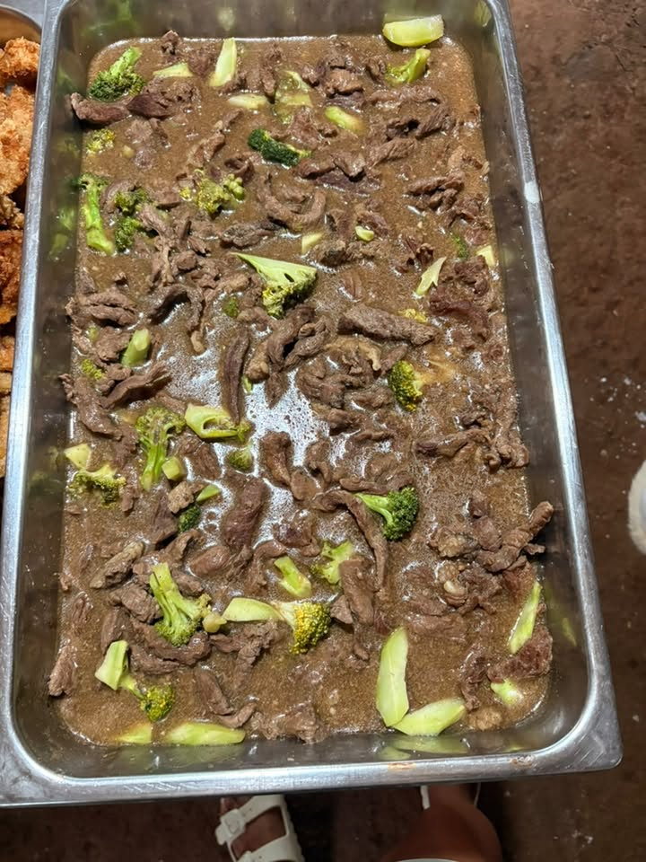
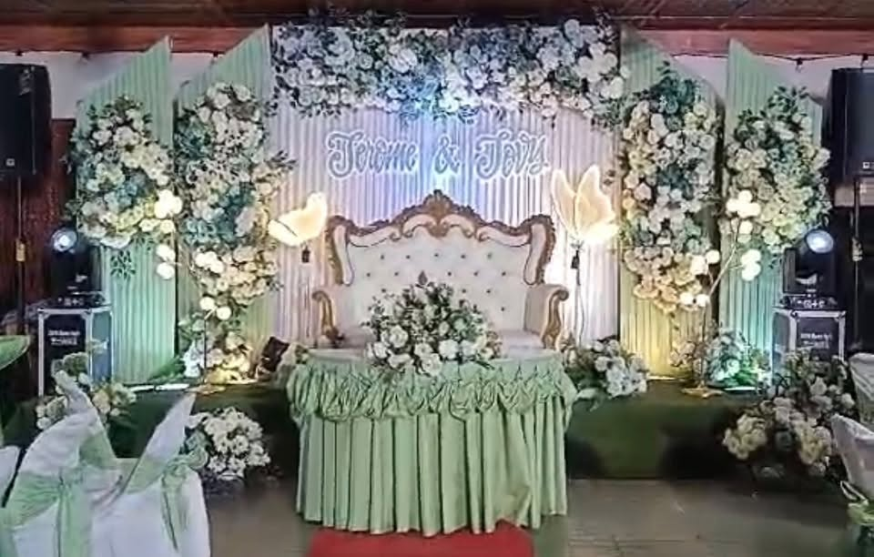
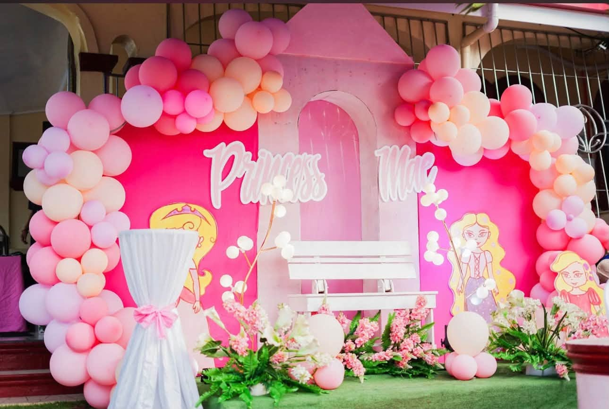
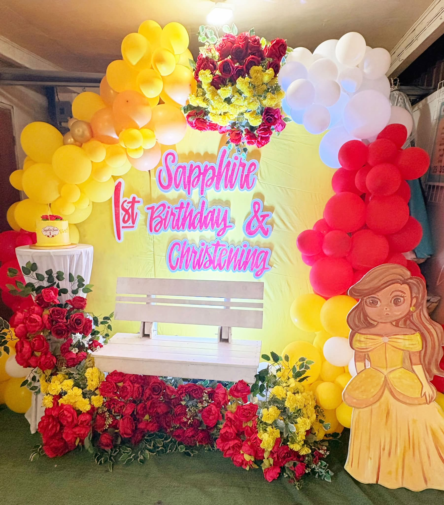

01 / CATERING✳
Save room
for good food.
Let the menu be part of the gathering. Share your guest count, food preferences and dietary questions, then ask for the latest menu and a quotation.


CATERING + EVENT STYLING
The tables are set. The room feels like you.
Now, bring everyone together.


A CELEBRATION DOESN’T HAVE TO BE COMPLICATED.
From a first birthday to a wedding day, Eyans brings catering and event styling to occasions worth gathering for.
Tell us the date, the place, and what you have in mind. We’ll start with your priorities and discuss the food, setting, and proposal with you.
Let’s make room for joy. ↗THE TWO GOOD THINGS WE BRING
Good food and a setting that feels right.
Tell us which parts you’d like help with.
Let the menu be part of the gathering. Share your guest count, food preferences and dietary questions, then ask for the latest menu and a quotation.


Florals, a colour story, a playful backdrop. Explore the published setups and talk to Eyans about the details that can work with your venue and budget.

YOUR DAY.Menus, decor, equipment, staffing and other inclusions are confirmed in your event proposal. Photographs show past work.
A FEW DAYS WE’VE HELPED DRESS UP
Find a detail you love.
Keep it in your plan and tell us why.
Wedding styling · Published 10 August 2026
Birthday styling · Published 14 October 2026
Birthday & christening · Published 17 October 2026
A CLOSER LOOK AT THE TABLE
A glimpse of the table styling and buffet dishes published on Eyans’ page. Ask about the current menu, serving arrangements and the details available for your event.
Tell us what you have in mind ↗LET’S MAKE THE PLAN FIT
Eyans describes its service as budget friendly. Start with what matters most: the food, the guest list, the styling, or all of it. Ask for current packages and an itemized quote for your date and location.
Build my starting plan ↗Your menu, guest count, venue, transport, decor and agreed inclusions shape the final quotation.
ASK ABOUT TODAY’S OPTIONS ↗YOUR NEXT HAPPY DAY STARTS HERE
Three short steps. One clear inquiry.
Review it before you send it to Eyans.
Eyans’ public posts mention weddings, birthdays, christenings, debuts, anniversaries and other celebrations. Share your event type and the services you need.
Eyans is based in Bolinao, Pangasinan. Published work also includes an event in Tondol, Anda. Send your exact venue or town to confirm coverage and transport arrangements.
Ask the team for current packages, menus, guest minimums and a dated, itemized quote. The planner helps you put the main details together before you inquire.
Select what interests you in the planner and ask which service combinations are available for your date, venue and guest count.
Save it as inspiration and explain what you like. The team must confirm the actual flowers, decor, equipment, suppliers and venue requirements in your proposal. Past photos do not guarantee identical inclusions.
Confirm availability directly with Eyans, review the final scope and quotation, and request the current reservation, payment, cancellation and rescheduling terms. An inquiry alone does not reserve a date.
THE BEST PART IS WHO YOU SHARE IT WITH.